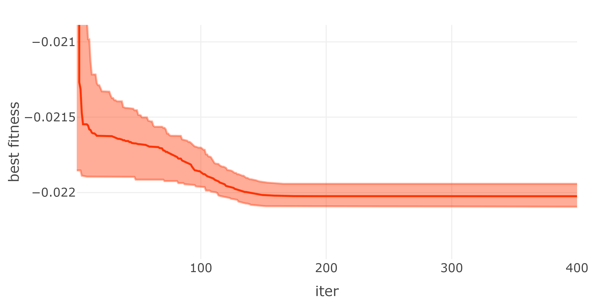
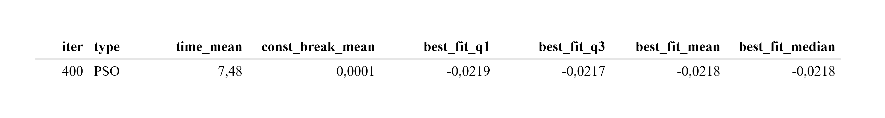
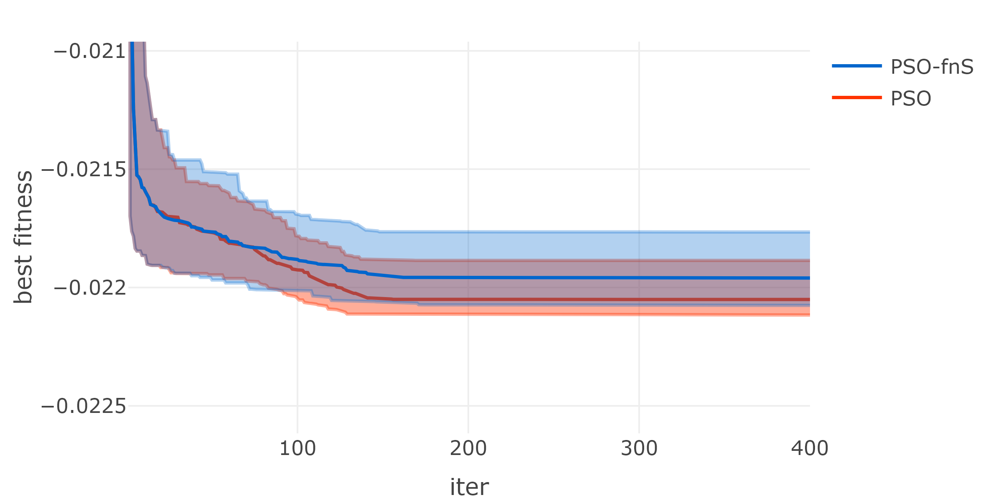
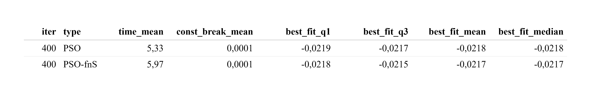
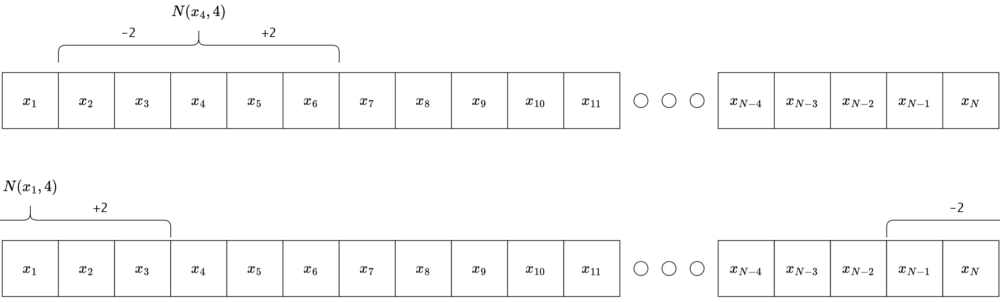
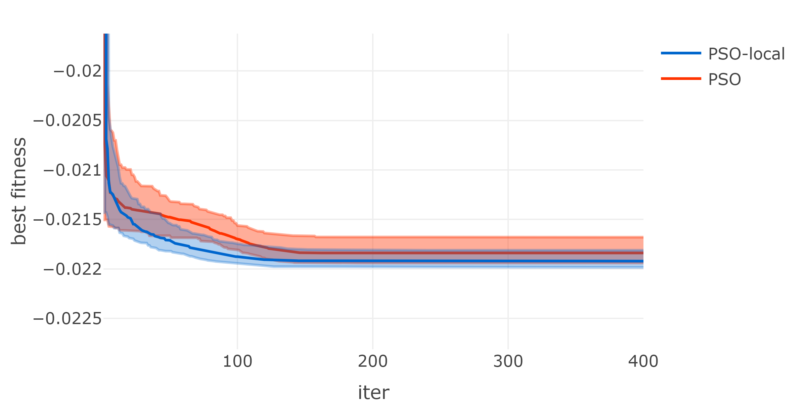
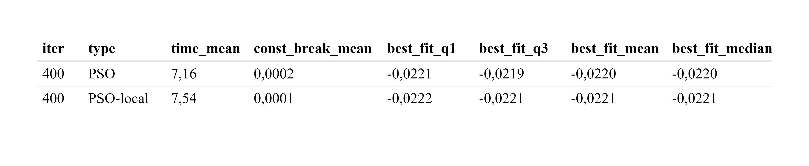
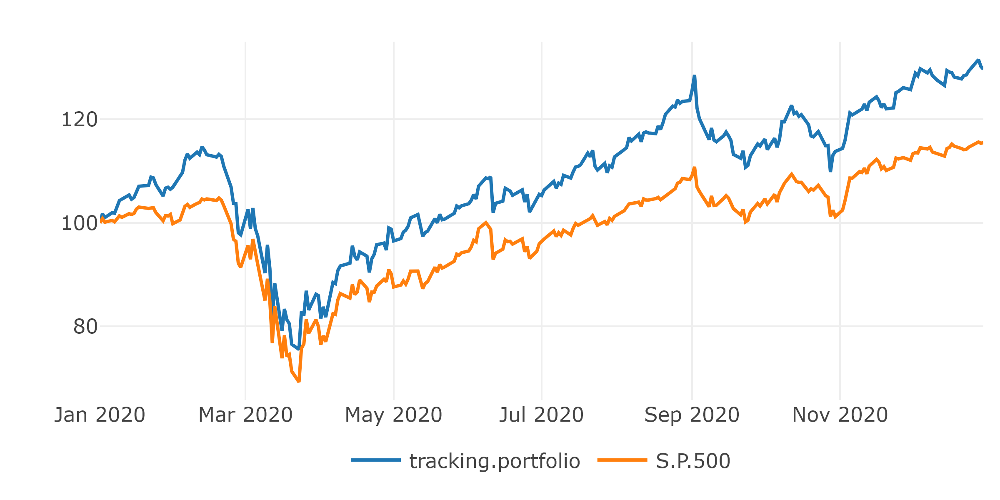
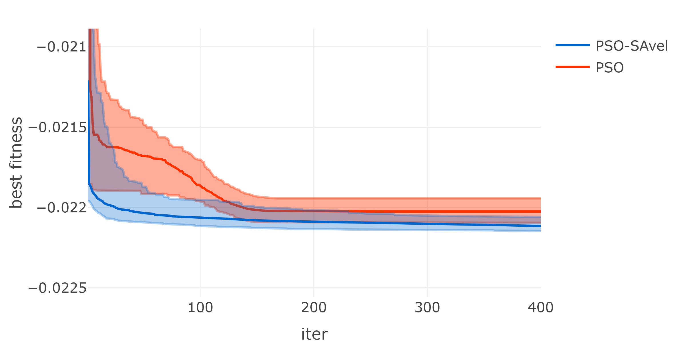
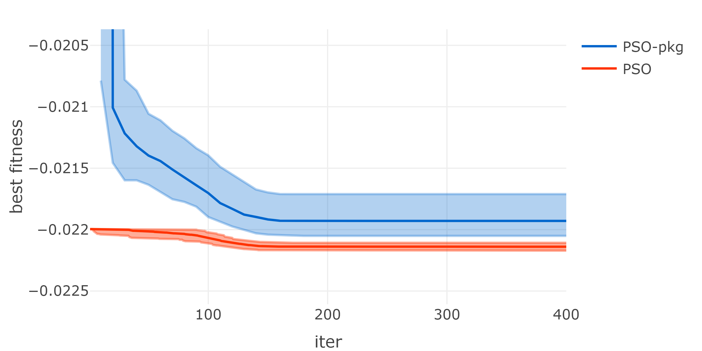

Chapter 8 PSO Variations
The standard PSO analyzed in the previous chapter is capable of solving a wide range of problems, but often gets stuck in local minima. In this chapter, different variants of the standard PSO are analyzed using a problem from the financial domain. The first variant is the PSO with function stretching, which is designed to allow the PSO to escape from local minima if they are discovered. The second variant is the local PSO, which is designed to reduce the probability of getting stuck in local minima by limiting the spread of information in the swarm. The third variant, the PSO with feasibility preservation, tries to optimize within the feasibility space and therefore provide only feasible solutions. The last variant is the PSO with self-adaptive velocity, which tries to adjust the control parameters according to certain rules and randomness.
8.0.1 Testproblem: Discrete ITP-MSTE
All variants are tested on a discrete ITP-MSTE to replicate the S&P 500 with a tracking portfolio consisting of the top 50 assets in the S&P 500. The daily data used to solve the ITP ranges from 2018-01-01 to 2019-12-31, and the assets must be in the S&P 500 at the end of the time frame and have no missing values. The top 50 assets are selected by solving a continuous ITP-MSTE using an solve.QP() approach, and the assets with the 50 highest weights are selected. The tracking portfolio is discrete and has a net asset value of twenty thousand USD. The tracking portfolio is discretized using closing prices on 2019-12-31, and returns are calculated as simple returns using the adjusted closing prices. The maximum weighting for each asset is 10% to reduce the dimension space of the problem. Additional constraints are long only and portfolio weights \(w\) should satisfy \(1 \leq \textstyle\sum w_i \geq 0.99\). All variants are run 100 times and compared to 100 runs of the standard PSO function created in the previous chapter. The swarm size for the PSO and all variants is 100 and the iterations are set to 400.
The next plot analyzes the behavior of the 100 standard PSO runs in each iteration by plotting the median of the best fitness achieved in each iteration. The confidence bands for the 95% and 5% quantiles of the best fitness values are plotted in the same color as the median, with less transparency:
nav <- 20000
from <- "2018-01-01"
to <- "2019-12-31"
spx_composition <- buffer(
get_spx_composition(),
"AS_spx_composition"
)
pool_data <- buffer(
get_yf(
tickers = spx_composition %>%
filter(Date<=to) %>%
filter(Date==max(Date)) %>%
pull(Ticker),
from = from,
to = to
),
"AS_sp500_asset_data"
)
pool_data$returns <-
pool_data$returns[, colSums(is.na(pool_data$returns))==0]
pool_data$prices <- pool_data$prices[, colnames(pool_data$returns)]
bm_returns <- buffer(
get_yf(tickers = "%5EGSPC", from = from, to = to)$returns,
"AS_sp500"
) %>% setNames(., "S&P 500")
pool_returns <- pool_data$returns
mat <- list(
Dmat = t(pool_returns) %*% pool_returns,
dvec = t(pool_returns) %*% bm_returns,
Amat = t(rbind(
rep(1, ncol(pool_returns)), # sum up to 1
diag(1,
nrow=ncol(pool_returns),
ncol=ncol(pool_returns)) # long only
)),
bvec = c(
1, # sum up to 1
rep(0, ncol(pool_returns)) # long only
),
meq = 1
)
# search 100 best tickers
qp <- solve.QP(
Dmat = mat$Dmat, dvec = mat$dvec,
Amat = mat$Amat, bvec = mat$bvec, meq = mat$meq
)
sub_ticker <- colnames(pool_returns)[order(qp$solution, decreasing = T)[1:50]]
pool_data$returns <- pool_data$returns[, sub_ticker]
pool_data$prices <- pool_data$prices[, sub_ticker]
prices <- last(pool_data$prices)
mat <- list(
Dmat = t(pool_data$returns) %*% pool_data$returns,
dvec = t(pool_data$returns) %*% bm_returns,
Amat = t(rbind(
rep(1, ncol(pool_data$returns)), # sum up to 1
diag(1,
nrow=ncol(pool_data$returns),
ncol=ncol(pool_data$returns)) # long only
)),
bvec = c(
1, # sum up to 1
rep(0, ncol(pool_data$returns)) # long only
),
meq = 1
)
calc_fit <- function(x){
as.numeric(0.5 * t(x) %*% mat$Dmat %*% x - t(mat$dvec) %*% x)
}
calc_const <- function(x){
const <- t(mat$Amat) %*% x - mat$bvec
const[mat$meq] <- -pmax(0, abs(const[mat$meq]+0.005)-0.005)
sum(pmin(0, const)^2)
}
set.seed(0)
df_SPSO <- NULL
for(i in 1:100){
res_SPSO_time <- system.time({
res_SPSO <- pso(
par = rep(0, ncol(pool_data$returns)),
fn = function(x){
x <- as.vector(round(x*nav/prices)*prices/nav)
fitness <- calc_fit(x)
constraints <- calc_const(x)
return(fitness+10*constraints)
},
lower = 0,
upper = 0.1,
control = list(
s = 50, # swarm size
c.p = 0.5, # inherit best
c.g = 0.5, # global best
maxiter = 400, # iterations
w0 = 1.2, # starting inertia weight
wN = 0, # ending inertia weight
save_fit = T # save more information
)
)
})
df_SPSO <- rbind(df_SPSO,
data.frame(
"run" = i,
suppressWarnings(rbind(data.frame(
"type" = "PSO", "time"=res_SPSO_time[3], "const_break"=calc_const(res_SPSO$solution), res_SPSO$fit_data %>% select(iter, "mean_fit"=mean, "best_fit"=best)
)))
)
)
}
df_res <- df_SPSO %>%
group_by(iter, type) %>%
summarise(time_mean=mean(time), const_break_mean=mean(const_break), best_fit_q1 = quantile(best_fit, 0.05), best_fit_q3 = quantile(best_fit, 0.95), best_fit_mean = mean(best_fit), best_fit_median = quantile(best_fit, 0.5)) %>%
ungroup()
plot_ly() %>%
add_trace(data = df_res, x=~iter, y=~best_fit_median, name = "PSO", mode="lines", type = 'scatter', line = list(color="rgba(255, 51, 0, 1)")) %>%
add_trace(data = df_res, x=~iter, y=~best_fit_q1, name = "PSO_q1", mode="lines", type = 'scatter', line = list(color="rgba(255, 51, 0, 0.4)"), showlegend=F) %>%
add_trace(data = df_res, x=~iter, y=~best_fit_q3, name = "PSO_q3", mode="lines", type = 'scatter', fill="tonexty", line = list(color="rgba(255, 51, 0, 0.4)"), fillcolor = "rgba(255, 51, 0, 0.4)", showlegend=F) %>%
layout(yaxis=list(range=c(min(df_res[df_res$iter>3,]$best_fit_q3)-0.001, max(df_res[df_res$iter>3,]$best_fit_q3)+0.001), title="best fitness")) %>%
html_save()
The aggregate statistics of the last iterations of all 100 runs can be found in the table below:

8.1 Function Stretching
PSO often gets stuck in local minima, i.e., if the current best global position is a local minima with a larger environment around it, with only higher fitness, it is hard for the PSO to escape and find the global minima. Function stretching tries to make the PSO escape from such local minima by transforming the fitness function in a way described in (Konstantinos Parsopoulos 2002). It states that after finding a local minimum, a two-stage transformation proposed by Vrahatis in 1996 can be used to stretch the original function so that the discovered local minimum is transformed into a maximum, but any position with less fitness remains unchanged. The two stages of the transformation with a discovered local minimum \(\bar{x}\) are: \[ G(x) = f(x) + \gamma_1 \cdot \| x-\bar{x} \| \cdot (\text{sign}(f(x)-f(\bar{x}))+1) \] and \[ H(x) = G(x) + \gamma_2 \cdot \frac{\text{sign}\biggl(f(x)-f(\bar{x})\biggr)+1}{\text{tanh}\biggl( \mu \cdot (G(x)-G(\bar{x})) \biggr)} \] The function \(G(\bar{x})\) can be simplified to \(f(\bar{x})\) and the \(\text{sign}()\) function is defined as follows: \[ \text{sign}(x) = \begin{cases} 1, & \text{if}\ \ x > 0\\ 0, & \text{if}\ \ x = 0\\ -1, & \text{if}\ \ x < 0 \end{cases} \] In the source it is suggested to select the following parameter values as default: \[\begin{align*} \gamma_1 &= 5000 \\ \gamma_2 &= 0.5 \\ \mu &= 10^{-10} \end{align*}\]
To better understand the transformation, it is used to stretch a simple function in \(\mathbb{R}^1\) defined as follows:
fn <- function(pos){
cos(pos) + 1/10 * pos
}and the domain of definition is chosen as \(x \in [-20, 20]\). Suppose the PSO gets stuck in the local minima at \(\bar{x} = \pi - \text{arcsin}(\frac{1}{10}) \approx 3.04\). The original function and the transformed function are shown in the following graph:
fn1 <- function(pos, pos_best, pos_best_fit){
res <- fn(pos)
G <- res + 5000 * sqrt(sum((pos - pos_best)^2))/length(pos) * (sign(res - pos_best_fit) + 1)
H <- G + 0.5 * (sign(res - pos_best_fit) + 1)/(tanh(10^(-10) * (G - pos_best_fit)))
return(H)
}
X <- seq(-20, 20, 0.001)
x_best <- pi-asin(1/10)
x_best_fit <- fn(x_best)
p1 <- plot_ly(x=X, y=sapply(X, fn), type="scatter", mode="lines", name="fn") %>%
add_trace(x=X, y=rep(fn(pi-asin(1/10)), length(X)), type="scatter", mode="lines", name="local_minima", line=list(dash="dot", color="grey"))
p2 <- plot_ly(x=X, y=sapply(X, fn1, pos_best=x_best, pos_best_fit=x_best_fit), type="scatter", mode="lines", name="fn_stretched", line=list(color="orange")) %>%
layout(yaxis=list(range=c(-2, 20)*10^5))
subplot(p1, p2, shareY=T, nrows=2) %>%
html_save(., vheight=700, vwidth=800) It can be seen that the fitness is stretched upward around the local minima \(\bar{x}\), making it much easier for the PSO to move down the hill and fall into new minima with lower fitness. All the lower fitness regions remain unchanged, as can be seen in the zoomed version of the bottom diagram from above:
It can be seen that the fitness is stretched upward around the local minima \(\bar{x}\), making it much easier for the PSO to move down the hill and fall into new minima with lower fitness. All the lower fitness regions remain unchanged, as can be seen in the zoomed version of the bottom diagram from above:

8.1.1 Implementation
Since it is not possible to know if the PSO is stuck in a local minima, a stagnation value was added that increases by one if the global best particle does not change. After ten iterations with no change, a local minima is assumed and the transformation of the objective function takes place. After that, all personal best fitness values must be re-evaluated to work with the evaluated space and the stagnation value is set to zero. To prevent transformation just at the end of all iterations, the current iteration must be less than the maximum iteration minus twenty to allow transformation to occur.
8.1.2 Test PSO with Function Stretching
The PSO with function stretching is called PSO-fnS and is evaluated on the test problem with \(\gamma_1 = 5000\), \(\gamma_2 = 0.5\) and \(\mu = 10^{-10}\):
set.seed(0)
# R/PSO_functions.R : pso_fn_stretching()
df <- NULL
for(i in 1:100){
res_pso_fns_time <- system.time({
res_pso_fns <- pso_fn_stretching(
par = rep(0, ncol(pool_data$returns)),
fn = function(x){
x <- as.vector(round(x*nav/prices)*prices/nav)
fitness <- calc_fit(x)
constraints <- calc_const(x)
return(fitness+10*constraints)
},
lower = 0,
upper = 0.1,
control = list(
s = 50, # swarm size
c.p = 0.5, # inherit best
c.g = 0.5, # global best
maxiter = 400, # iterations
w0 = 1.2, # starting inertia weight
wN = 0, # ending inertia weight
fn_stretching = T,
save_fit = T
)
)
})
df <- rbind(df,
data.frame(
"run" = i,
suppressWarnings(data.frame(
"type" = "PSO-fnS", "time"=res_pso_fns_time[3], "const_break"=calc_const(res_pso_fns$solution), res_pso_fns$trace_fit %>% select(iter, mean_fit, best_fit)
))
)
)
}
df_res <- rbind(df_SPSO, df) %>%
#mutate(best_fit = best_fit +1) %>%
group_by(iter, type) %>%
summarise(time_mean=mean(time), const_break_mean=mean(const_break), best_fit_q1 = quantile(best_fit, 0.05), best_fit_q3 = quantile(best_fit, 0.95), best_fit_mean = mean(best_fit), best_fit_median = quantile(best_fit, 0.5)) %>%
ungroup()
plot_ly() %>%
add_trace(data = df_res %>% filter(type=="PSO"), x=~iter, y=~best_fit_median, name = "PSO", mode="lines", type = 'scatter', line = list(color="rgba(255, 51, 0, 1)")) %>%
add_trace(data = df_res %>% filter(type=="PSO"), x=~iter, y=~best_fit_q1, name = "PSO_q1", mode="lines", type = 'scatter', line = list(color="rgba(255, 51, 0, 0.4)"), showlegend=F) %>%
add_trace(data = df_res %>% filter(type=="PSO"), x=~iter, y=~best_fit_q3, name = "PSO_q3", mode="lines", type = 'scatter', fill="tonexty", line = list(color="rgba(255, 51, 0, 0.4)"), fillcolor = "rgba(255, 51, 0, 0.4)", showlegend=F) %>%
add_trace(data = df_res %>% filter(type=="PSO-fnS"), x=~iter, y=~best_fit_median, name = "PSO-fnS", mode="lines", type = 'scatter',line = list(color="rgba(0, 102, 204, 1)")) %>%
add_trace(data = df_res %>% filter(type=="PSO-fnS"), x=~iter, y=~best_fit_q1, name = "PSO-fnS_q1", mode="lines", type = 'scatter', line = list(color="rgba(0, 102, 204, 0.3)"), showlegend=F) %>%
add_trace(data = df_res %>% filter(type=="PSO-fnS"), x=~iter, y=~best_fit_q3, name = "PSO-fnS_q3", mode="lines", type = 'scatter', fill="tonexty", line = list(color="rgba(0, 102, 204, 0.3)"), fillcolor = "rgba(0, 102, 204, 0.3)", showlegend=F) %>%
layout(yaxis=list(range=c(min(df_res[df_res$iter>3,]$best_fit_q3)-0.001, max(df_res[df_res$iter>3,]$best_fit_q3)+0.001), title="best fitness")) %>%
html_save()
The aggregate statistics of the last iterations of all 100 runs can be found in the table below:

8.2 Local PSO
A local PSO is a more general case of the global PSO. The only difference is the selection of the global best particle by defining a neighborhood. Each particle \(x_i\) has a neighborhood \(N(x_i, \bar{k})\), and the global best particle in its neighborhood is called the local best particle of \(x_i\). If the neighborhood is chosen large enough to contain all particles, it corresponds to the standard PSO (global PSO). A simple definition of a neighborhood with \(k\) neighbors for particles \(x_i\) given in (Engelbrecht 2013) would be:
\[ N(x_i, k) = \{ x_{i-\bar{k}}, x_{i-(\bar{k}-1)}, x_{i-(\bar{k}-2)}, \cdots, x_{i}, \cdots, x_{i+(\bar{k}-2)}, x_{i+(\bar{k}-1)}, x_{i+\bar{k}} \} \] with \[ \bar{k} = floor(\frac{k}{2}) = \lfloor \frac{k}{2} \rfloor \] To illustrate this, the following figure defines the neighborhoods \(N(x_4, 4)\) and \(N(x_1, 4)\):
 In the latter case, it can be seen that the overflowing boundary will continue on the opposite side of the arranged particles.
8.2.1 Implementation
First, the neighbors for each particle are stored in a suitable data structure before the main part of the PSO is executed. In the local version there is no global best particle, instead the global best particle for the neighborhood of each particle has to be calculated in each step.
8.2.2 Test Local PSO
The PSO with particle neighborhoods is called PSO-local and evaluated on the test problem with \(k=10\):
set.seed(0)
# R/PSO_functions.R : pso_local()
df <- NULL
for(i in 1:100){
res_pso_local_time <- system.time({
res_pso_local <- pso_local(
par = rep(0, ncol(pool_data$returns)),
fn = function(x){
x <- as.vector(round(x*nav/prices)*prices/nav)
fitness <- calc_fit(x)
constraints <- calc_const(x)
return(fitness+10*constraints)
},
lower = 0,
upper = 0.1,
control = list(
s = 50, # swarm size
c.p = 0.5, # inherit best
c.g = 0.5, # global best
maxiter = 400, # iterations
w0 = 1, # starting inertia weight
wN = 0.4, # ending inertia weight
save_fit = T,
k=10
)
)
})
df <- rbind(df,
data.frame(
"run" = i,
suppressWarnings(data.frame(
"type" = "PSO-local", "time"=res_pso_local_time[3], "const_break"=calc_const(res_pso_local$solution), res_pso_local$fit_data %>% select(iter, "mean_fit"=mean, "best_fit" = best)
))
)
)
}
df_res <- rbind(df_SPSO, df) %>%
#mutate(best_fit = best_fit +1) %>%
group_by(iter, type) %>%
summarise(time_mean=mean(time), const_break_mean=mean(const_break), best_fit_q1 = quantile(best_fit, 0.05), best_fit_q3 = quantile(best_fit, 0.95), best_fit_mean = mean(best_fit), best_fit_median = quantile(best_fit, 0.5)) %>%
ungroup()
plot_ly() %>%
add_trace(data = df_res %>% filter(type=="PSO"), x=~iter, y=~best_fit_median, name = "PSO", mode="lines", type = 'scatter', line = list(color="rgba(255, 51, 0, 1)")) %>%
add_trace(data = df_res %>% filter(type=="PSO"), x=~iter, y=~best_fit_q1, name = "PSO_q1", mode="lines", type = 'scatter', line = list(color="rgba(255, 51, 0, 0.4)"), showlegend=F) %>%
add_trace(data = df_res %>% filter(type=="PSO"), x=~iter, y=~best_fit_q3, name = "PSO_q3", mode="lines", type = 'scatter', fill="tonexty", line = list(color="rgba(255, 51, 0, 0.4)"), fillcolor = "rgba(255, 51, 0, 0.4)", showlegend=F) %>%
add_trace(data = df_res %>% filter(type=="PSO-local"), x=~iter, y=~best_fit_median, name = "PSO-local", mode="lines", type = 'scatter',line = list(color="rgba(0, 102, 204, 1)")) %>%
add_trace(data = df_res %>% filter(type=="PSO-local"), x=~iter, y=~best_fit_q1, name = "PSO-local_q1", mode="lines", type = 'scatter', line = list(color="rgba(0, 102, 204, 0.3)"), showlegend=F) %>%
add_trace(data = df_res %>% filter(type=="PSO-local"), x=~iter, y=~best_fit_q3, name = "PSO-local_q3", mode="lines", type = 'scatter', fill="tonexty", line = list(color="rgba(0, 102, 204, 0.3)"), fillcolor = "rgba(0, 102, 204, 0.3)", showlegend=F) %>%
layout(yaxis=list(range=c(min(df_res[df_res$iter>7,]$best_fit_q3)-0.001, max(df_res[df_res$iter>7,]$best_fit_q3)+0.001), title="best fitness")) %>%
html_save()
The aggregate statistics of the last iterations of all 100 runs can be found in the table below:

It can be seen that it is superior to the standard PSO in this case. Especially in preventing stagnation in local minimas, which can be seen in the narrower quantile bands at the end.
8.4 Self-Adaptive Velocity
A self-adaptive velocity PSO approach that attempts to reduce hyperparameters was analyzed in (Qinqin Fan 2014). The self-adaptive velocity is enabled by multiple velocity update schemes that are used randomly. In addition, all hyperparameters are self-adaptive in the way that each particle has its own coefficients \(c_g\), \(c_p\), and \(w\), which change after each iteration depending on the distance to maximum fitness, among other factors. The resulting PSO has no real hyperparameters to adjust, which allows it to be used as a general-purpose PSO.
8.4.1 Implementation
The process of this PSO variant is too different from the standard PSO, so all changes are combined in steps:
Initialize
Each particle \(d\) must initialize its own inertial weight \(w_d^0=0.5\) and acceleration coefficients \(c_{p,d}^0 = c_{g,d}^0 = 2\).Velocity and positions
Update the velocity of each particle \(d\) with the following switch-case for a uniform random number \(r = \text{Unif}(0,1)\) in iteration \(i+1\): \[\begin{align*} v_d^{i+1} &= w_d^i \cdot v_d^{i}+c_{p,d}^i \cdot Z \cdot (P_{d}^i-x_d^i) + c_{g,d}^i \cdot Z \cdot (p_{g}^i-x_d^i) \\ Z &= \begin{cases} \text{Unif}(0,1), & \text{if}\ \ r > 0.8\\ \text{Cauchy}(\mu_1, \sigma_1), & \text{if}\ \ 0.8 \geq r > 0.4\\ \text{Cauchy}(\mu_2, \sigma_2), & \text{if}\ \ 0.4 \geq r\\ \end{cases} \end{align*}\] with \[\begin{align*} \mu_1 &= 0.1 \cdot (1-(\frac{i}{i_{max}})^2) + 0.3 \\ \sigma_1 &= 0.1 \\ \mu_2 &= 0.4 \cdot (1-(\frac{i}{i_{max}})^2) + 0.2 \\ \sigma_2 &= 0.4 \end{align*}\] and \(\text{Cauchy}(\mu, \sigma)\) is a random number generated from the Cauchy distribution obtained withrcauchy()in R. The position update is the same as for the standard PSO. When a particle \(d\) has left the feasible search space in its coordinate \(z\), it is moved back with the following switch-case for \(r = \text{Unif}(0,1)\): \[ x_{d,z} = \begin{cases} \text{generate uniform in feasable space}, & \text{if}\ \ r > 0.7\\ \text{push back to boundary}, & \text{otherwise}\ \ \\ \end{cases} \]Fitness evaluation
In the same way as for the standard PSO.Self-adaptive control parameters
For an objective function \(f()\) and the maximum fitness of all particles \(f_{max} = \text{max}(f(X^{i+1}))\), the parameters \(w_d^{i}\), \(c_{p,d}^{i}\) and \(c_{g,d}^{i}\) are adjusted for each particle \(d\) as follows: \[\begin{align*} W^i_d &= \frac{\left| f(x_d^{i+1})-f_{max} \right|}{\sum_d\left| f(x_d^{i+1})-f_{max} \right|} \\ w_d^{i+1} &= \text{Cauchy}(\sum_d W^i_d \cdot w_d^{i}, 0.2) \\ c_{p,d}^{i+1} &= \text{Cauchy}(\sum_d W^i_d \cdot c_{p,d}^{i}, 0.3) \\ c_{g,d}^{i+1} &= \text{Cauchy}(\sum_d W^i_d \cdot c_{g,d}^{i}, 0.3) \end{align*}\] Then, the parameters are adjusted to their limits using the following formulas: \[\begin{align*} w_d^{i+1} &= \begin{cases} \text{Unif}(0,1), & \text{if}\ \ w_d^{i+1} > 1\\ \text{Unif}(0,0.1), & \text{if}\ \ 0 > w_d^{i+1}\\ w_d^{i+1}, & \text{otherwise} \end{cases}\\ c_{p,d}^{i+1} &= \begin{cases} \text{Unif}(0,1) \cdot 4, & \text{if}\ \ c_{p,d}^{i+1} > 4\\ \text{Unif}(0,1), & \text{if}\ \ 0 > c_{p,d}^{i+1}\\ c_{p,d}^{i+1}, & \text{otherwise} \end{cases}\\ c_{g,d}^{i+1} &= \begin{cases} \text{Unif}(0,1) \cdot 4, & \text{if}\ \ c_{g,d}^{i+1} > 4\\ \text{Unif}(0,1), & \text{if}\ \ 0 > c_{g,d}^{i+1}\\ c_{g,d}^{i+1}, & \text{otherwise} \end{cases}\\ \end{align*}\]Update the best positions
Update the personal best \(P\) and global best \(p_g\) positions as in the standard PSO.Repeat
Steps 2 to 5 are repeated until the maximum iteration number \(i_{max}\) is reached.
8.4.2 Analyse Implementation
The random use of the distributions for the velocity update increases the diversity of the swarm. The coefficients of iteration \(i\) with 100 maximum iterations are distributed as follows:

It can be seen that the randomness of the motion increases compared to the uniform distribution and the center of the Cauchy distributions slowly decreases towards the absolute term. In addition, the two Cauchy distributions differ in explorability and exploitability, indicated by probabilities outside \([0, 1]\).
Even more difficult to interpret is the adjusting of the control parameters. The value \(W_d^i\) is a weighting of the distances to the worst fitness, resulting in a higher weighting of the particles with good fitness. Later, the control parameters are adjusted using the Cauchy distribution with a weighted value of the previous control parameters as the center, giving higher weights to the control parameters that produced better fitness. This results in random control parameters distributed around the best previous control parameters. The resulting behavior can be described with a small quote, “If exploration is beneficial, more exploration is done. If not, more is exploited.”
8.4.3 Test PSO with Self-Adaptive Velocity
The PSO with self-adaptive speed is called PSO-SAvel and is evaluated for the test problem with the constants used in the implementation section:
set.seed(0)
# R/PSO_functions.R : pso_self_adaptive_velocity()
df <- NULL
for(i in 1:100){
res_pso_SAvel_time <- system.time({
res_pso_SAvel <- pso_self_adaptive_velocity(
par = rep(0, ncol(pool_data$returns)),
fn = function(x){
x <- as.vector(round(x*nav/prices)*prices/nav)
fitness <- calc_fit(x)
constraints <- calc_const(x)
return(fitness+10*constraints)
},
lower = 0,
upper = 0.1,
control = list(
s = 50, # swarm size
maxiter = 400, # iterations
save_fit = T
)
)
})
df <- rbind(df,
data.frame(
"run" = i,
suppressWarnings(data.frame(
"type" = "PSO-SAvel", "time"=res_pso_SAvel_time[3], "const_break"=calc_const(res_pso_SAvel$solution), res_pso_SAvel$fit_data %>% select(iter, mean_fit=mean, best_fit=best)
))
)
)
}
df_res <- rbind(df_SPSO, df) %>%
#mutate(best_fit = best_fit +1) %>%
group_by(iter, type) %>%
summarise(time_mean=mean(time), const_break_mean=mean(const_break), best_fit_q1 = quantile(best_fit, 0.05), best_fit_q3 = quantile(best_fit, 0.95), best_fit_mean = mean(best_fit), best_fit_median = quantile(best_fit, 0.5)) %>%
ungroup()
plot_ly() %>%
add_trace(data = df_res %>% filter(type=="PSO"), x=~iter, y=~best_fit_median, name = "PSO", mode="lines", type = 'scatter', line = list(color="rgba(255, 51, 0, 1)")) %>%
add_trace(data = df_res %>% filter(type=="PSO"), x=~iter, y=~best_fit_q1, name = "PSO_q1", mode="lines", type = 'scatter', line = list(color="rgba(255, 51, 0, 0.4)"), showlegend=F) %>%
add_trace(data = df_res %>% filter(type=="PSO"), x=~iter, y=~best_fit_q3, name = "PSO_q3", mode="lines", type = 'scatter', fill="tonexty", line = list(color="rgba(255, 51, 0, 0.4)"), fillcolor = "rgba(255, 51, 0, 0.4)", showlegend=F) %>%
add_trace(data = df_res %>% filter(type=="PSO-SAvel"), x=~iter, y=~best_fit_median, name = "PSO-SAvel", mode="lines", type = 'scatter',line = list(color="rgba(0, 102, 204, 1)")) %>%
add_trace(data = df_res %>% filter(type=="PSO-SAvel"), x=~iter, y=~best_fit_q1, name = "PSO-SAvel_q1", mode="lines", type = 'scatter', line = list(color="rgba(0, 102, 204, 0.3)"), showlegend=F) %>%
add_trace(data = df_res %>% filter(type=="PSO-SAvel"), x=~iter, y=~best_fit_q3, name = "PSO-SAvel_q3", mode="lines", type = 'scatter', fill="tonexty", line = list(color="rgba(0, 102, 204, 0.3)"), fillcolor = "rgba(0, 102, 204, 0.3)", showlegend=F) %>%
layout(yaxis=list(range=c(min(df_res[df_res$iter>20,]$best_fit_q3)-0.001, max(df_res[df_res$iter>20,]$best_fit_q3)+0.001), title="best fitness")) %>%
html_save()
The aggregate statistics of the last iterations of all 100 runs can be found in the table below:
8.5 PSO R-Package
Analyse: Unterschied zu meiner implementation: PSO-pkg hat eine bessere veolcity initialisierung aber kann volle länge haben und ich habe 1/10.
set.seed(0)
df <- NULL
for(i in 1:100){
res_pso_pkg_time <- system.time({
res_pso_pkg <-suppressMessages(psoptim(
par = rep(0, ncol(pool_data$returns)),
fn = function(x){
x <- as.vector(round(x*nav/prices)*prices/nav)
fitness <- calc_fit(x)
constraints <- calc_const(x)
return(fitness+10*constraints)
},
lower = 0,
upper = 0.1,
control = list(
s = 50, # swarm size
maxit = 400, # iterations
w = c(1.2, 0),
c.p = 0.5,
c.g = 0.5,
k = 50,
p=1,
type="SPSO2007",
hybrid=F,
rand.order=F,
trace.stats = T,
trace=T
)
))
})
df_raw <- data.frame("iter"=res_pso_pkg$stats$it, "best_fit"=lapply(res_pso_pkg$stats$f, min) %>% unlist() %>% as.vector())
min_fit <- df_raw[1,]$best_fit
for(k in 2:nrow(df_raw)){
if(min_fit < df_raw[k,]$best_fit){
df_raw[k,]$best_fit <- min_fit
}else{
min_fit <- df_raw[k,]$best_fit
}
}
df <- rbind(df,
data.frame(
"run" = i,
suppressWarnings(data.frame(
"type" = "PSO-pkg", "time"=res_pso_pkg_time[3], "const_break"=calc_const(res_pso_pkg$par), df_raw
))
)
)
}
df_res <- bind_rows(df_SPSO, df) %>%
#mutate(best_fit = best_fit +1) %>%
group_by(iter, type) %>%
summarise(time_mean=mean(time), const_break_mean=mean(const_break), best_fit_q1 = quantile(best_fit, 0.05), best_fit_q3 = quantile(best_fit, 0.95), best_fit_mean = mean(best_fit), best_fit_median = quantile(best_fit, 0.5)) %>%
ungroup()
plot_ly() %>%
add_trace(data = df_res %>% filter(type=="PSO"), x=~iter, y=~best_fit_median, name = "PSO", mode="lines", type = 'scatter', line = list(color="rgba(255, 51, 0, 1)")) %>%
add_trace(data = df_res %>% filter(type=="PSO"), x=~iter, y=~best_fit_q1, name = "PSO_q1", mode="lines", type = 'scatter', line = list(color="rgba(255, 51, 0, 0.4)"), showlegend=F) %>%
add_trace(data = df_res %>% filter(type=="PSO"), x=~iter, y=~best_fit_q3, name = "PSO_q3", mode="lines", type = 'scatter', fill="tonexty", line = list(color="rgba(255, 51, 0, 0.4)"), fillcolor = "rgba(255, 51, 0, 0.4)", showlegend=F) %>%
add_trace(data = df_res %>% filter(type=="PSO-pkg"), x=~iter, y=~best_fit_median, name = "PSO-pkg", mode="lines", type = 'scatter',line = list(color="rgba(0, 102, 204, 1)")) %>%
add_trace(data = df_res %>% filter(type=="PSO-pkg"), x=~iter, y=~best_fit_q1, name = "PSO-pkg_q1", mode="lines", type = 'scatter', line = list(color="rgba(0, 102, 204, 0.3)"), showlegend=F) %>%
add_trace(data = df_res %>% filter(type=="PSO-pkg"), x=~iter, y=~best_fit_q3, name = "PSO-pkg_q3", mode="lines", type = 'scatter', fill="tonexty", line = list(color="rgba(0, 102, 204, 0.3)"), fillcolor = "rgba(0, 102, 204, 0.3)", showlegend=F) %>%
layout(yaxis=list(range=c(min(df_res[df_res$iter>20,]$best_fit_q3)-0.001, max(df_res[df_res$iter>20,]$best_fit_q3)+0.001), title="best fitness")) %>%
html_save()